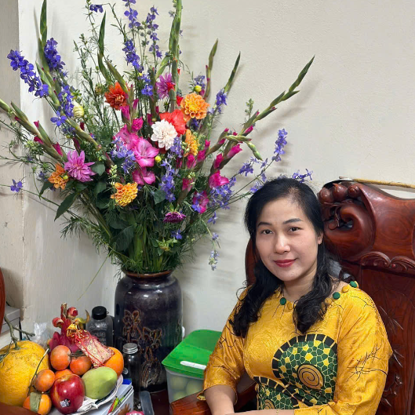

Về Liên Mẫu Hậu
Phạm Hồng Liên, thường được gọi một cách trìu mến là Liên Mẫu Hậu, là người phụ nữ nổi bật bởi sự tinh tế, bản lĩnh và lòng nhân hậu.
Với giọng hát truyền cảm và khiếu hài hước trời ban, cô luôn mang đến tiếng cười và sự ấm áp cho mọi người xung quanh.
Cô là hình mẫu lý tưởng của một người phụ nữ cần có trong mọi gia đình.
Người giữ lửa gia đình
Trong vai trò người mẹ, người vợ và người “nội tướng”, Liên Mẫu Hậu không chỉ chăm sóc chu đáo từng bữa ăn, mà còn là chỗ dựa tinh thần vững chắc cho mọi thành viên trong nhà.
Bằng sự quyết đoán và tinh thần lạc quan, cô giữ gìn nề nếp, xây dựng một gia đình ấm êm, hạnh phúc.
Đôi lúc vất vả, cô vẫn không ngại khó khăn để nuôi dạy con cái.
Nhắn gửi Liên Mẫu Hậu
Mặc dù nhiều lúc hay nổi nóng, cô vẫn dành những tình cảm chân thành cho gia đình.
Sự chân thành và tinh thần hết lòng vì người thân đã khiến cô trở thành một biểu tượng đáng ngưỡng mộ trong mắt con cháu.
🎉🎉Chúc Liên tìm được nhiều niềm vui và hạnh phúc trong cuộc sống.